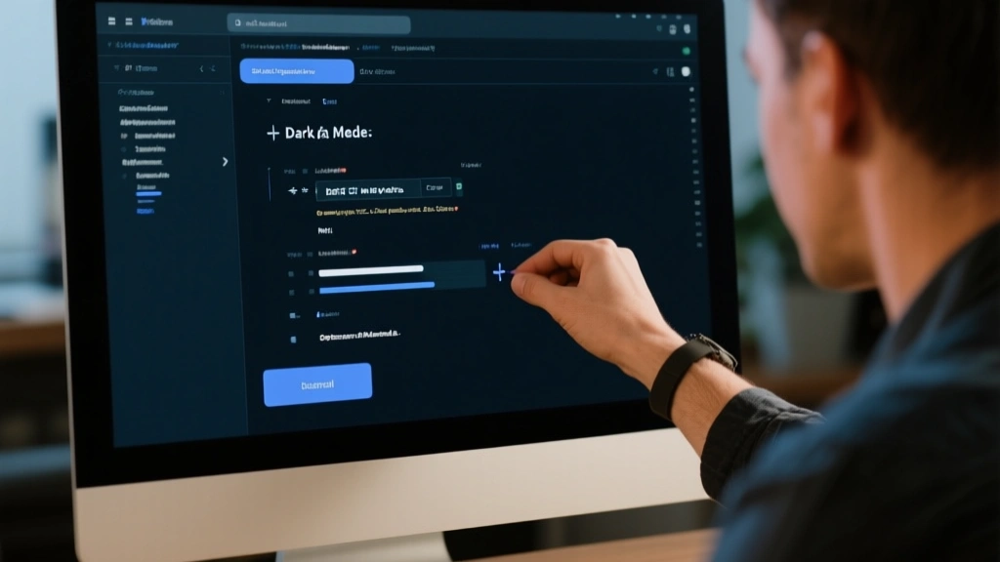

Dark mode has moved from a curiosity to a baseline requirement. Yet many campaigns still look off in dark mode because emails either rely on blindly static colors or neglect how clients swap color contexts. This article offers a practical approach: set a design system, test rigorously, and apply a repeatable before/after framework to deliver consistent inbox experiences.
1) Build a color system that survives color inversion
Start with a defined palette that considers how dark mode inverts or applies its own color logic. Use semantic tokens (e.g., --bg, --text, --card) and reference them in CSS rather than hard-coded hex values. This yields predictable contrasts when the client switches modes.
Practical tip: keep body text at 14–16px with a contrast ratio of at least 4.5:1 against background across both modes. Design tokens should map to both light and dark surfaces, so you’re never guessing when a client toggles mode.
2) Use a robust before/after framework to validate rendering
Before: a single color swap inlined into the email often produces washed-out text or garbled logos. After: a defined process that validates both modes using paired tests and versioned assets.
Adopt a before/after checklist to ensure critical assets render: logo with white/colored variants, background cards, CTA buttons, and dividers. When you see degraded contrast in dark mode, isolate the asset as the failure point and swap it with a brand-approved variant.
Unconditional use of brand colors without mode-specific assets.
Mode-aware assets and a token-driven palette ensure readability in both modes.

3) Test, test, test across clients and devices
Rely on automated checks for both light and dark rendering. Use a mix of in-browser previews and synthetic render tests across popular clients (Gmail, Outlook 365, Apple Mail) and device types (iPhone, Android). Document edge cases so your future campaigns don’t repeat the same mistakes.
Bottom line: what looks right in one client at one time may look wrong in another. A living checklist keeps teams aligned and reduces retries.
- Define a color system with accessible tokens for both modes
- Maintain separate assets for dark mode logos and cards
- Run automated rendering checks in every release
- Document edge cases in a living playbook
- Stage 1 — Plan and tokenizeDraft a color token map and asset variants for dark mode.
- Stage 2 — Implement and testIntegrate tokens into HTML/CSS and run cross-client tests.
- Stage 3 — Review and publishDocument decisions and publish assets with a version tag.
Mode-aware design reduces support tickets and boosts reader satisfaction across devices.
Closing thoughts
Dark mode is here to stay. The most valuable outcome isn’t a one-off fix but a repeatable process: tokenize your colors, separate assets, and build a test-first culture around rendering. When you do, readers won’t notice mode shifts—they’ll simply read your content as intended.
The Bottom Line
A solid color system, paired tests, and mode-aware assets are the trifecta for reliable dark-mode email rendering.